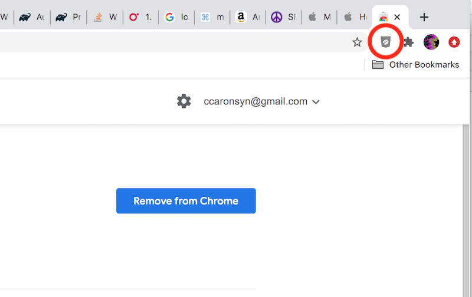

To Run Applets in Chrome Browser, follow these steps:
-
If not done, install the CheerPJ extension for Chrome browser here
-
With extension installed, click on the CheerPJ extension button to the right of the browser search window to enable the Applet
